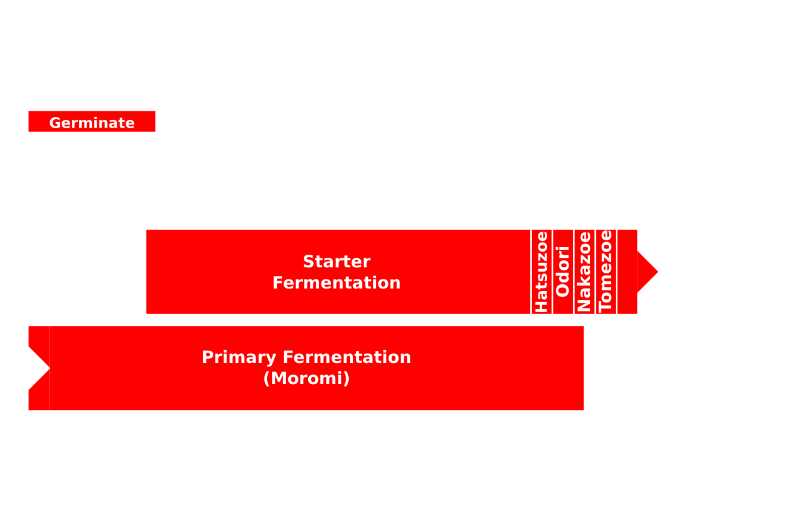
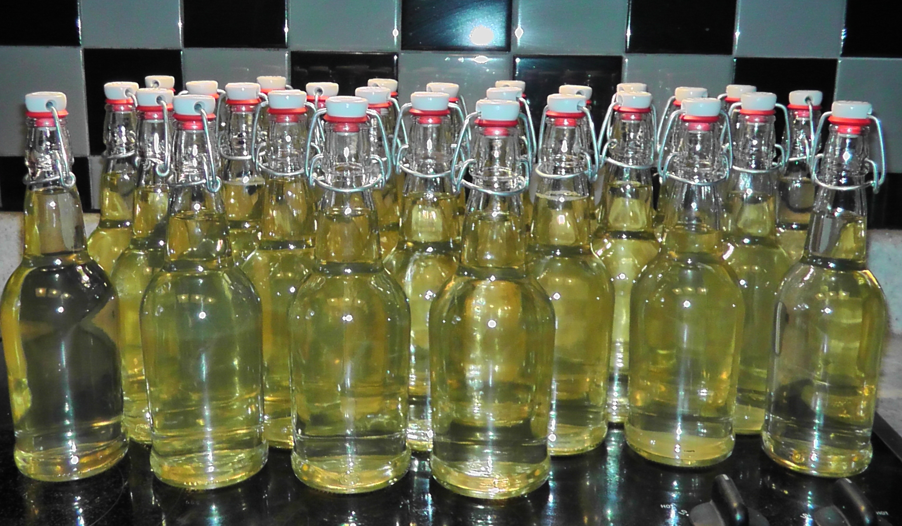

Introduction to Sake Making
Tad & Marty Ashlock
Ingredients
Rice — Kome 米
Water — Mizu 水
Yeast — Kobo 酵母
Koji — 麹
Ingredients: Rice
Kome
米
Ingredients: Rice
Ingredients: Water
Mizu
水
Ingredients: Water
Ingredients: Yeast
Kobo
酵母
Ingredients: Yeast
Ingredients: Koji
Koji
麹
Ingredients: Koji
Ingredients: Koji
Process
Process Overview
Process Overview
Process Overview

Process Overview
Process Overview
Process Overview
Process Overview
Process Overview
Process Overview
Process Overview
Comparison to Beer Making Process
Comparison to Beer Making Process
Comparison to Beer Making Process

Comparison to Beer Making Process
Comparison to Beer Making Process
Comparison to Beer Making Process
Comparison to Beer Making Process
Comparison to Beer Making Process
Comparison to Beer Making Process
Comparison to Beer Making Process
Comparison to Beer Making Process
Comparison to Beer Making Process

Comparison to Beer Making Process
Comparison to Beer Making Process
Comparison to Beer Making Process
Comparison to Beer Making Process

Process Overview
Shubo / Moto
Sake version of a yeast starter
Shubo / Moto: Preparation
- Measure out all rice and koji
- Prepare the moto water
- distilled water
- Morton's salt substitute
- Epsom salt
- lactic acid
- yeast nutrient
Shubo / Moto: Rice Handling Overview
- wash the rice
- soak the rice
- rinse the rice
- drain the rice
- steam the rice
- test the rice
- cool the rice
- add the rice
Shubo / Moto: Special Equipment
Rice Washer
Shubo / Moto: Special Equipment
Rice Steamer
Shubo / Moto: Special Equipment
Butter Muslin
Shubo / Moto: Special Equipment
Microscope
Shubo / Moto: Wash the Rice
Shubo / Moto: Soak the Rice
Shubo / Moto: Rinse the Rice
Shubo / Moto: Drain the Rice
Shubo / Moto: Steam the Rice
Shubo / Moto: Test the Rice
Shubo / Moto: Cool the Rice
Shubo / Moto: Add the Rice
Shubo / Moto: Fermentation
Shubo / Moto: Fermentation
San Dan Jikomi
三段仕込み – Three-Step Addition
San Dan Jikomi
- 初添 Hatsuzoe — The First Addition
- 踊 Odori — The "Dancing Ferment"
- 仲添 Nakazoe — The Second Addition
- 留添 Tomezoe — The Third Addition
San Dan Jikomi: Preparation for Each Addition
Add Koji & Water to the Mash
San Dan Jikomi: Rice Handling for Each Addition
- wash the rice
- soak the rice
- rinse the rice
- drain the rice
- steam the rice
- test the rice
- cool the rice
- add the rice
San Dan Jikomi: Temperature
Moromi: Primary Fermentation
醪 — Sake Mash
Moromi: Primary Fermentation
- Let the moromi ferment for two to four weeks
- First five days stir twice daily
Moromi: Temperature
Shibori
搾り — Press or Squeeze
Shibori: Special Equipment
Straining Bag
Shibori
Custom Handcrafted Jewelry By:
Danny Wade
Racking #1, #2, and #3
Pasteurizing (After Racking #3)
Aging
Let the sake rest for about 3 weeks
Adjustments
- Sugar
- Water
Bottling
Final Pasteurizing
Alcohol Percentage
How to Measure ABV?
%ABV = 1.646 * °BRIX - 2.703 * (145 - (145 / SG)) - 1.794
(from Rogerson & Symington (2006))
Ready to Drink!
